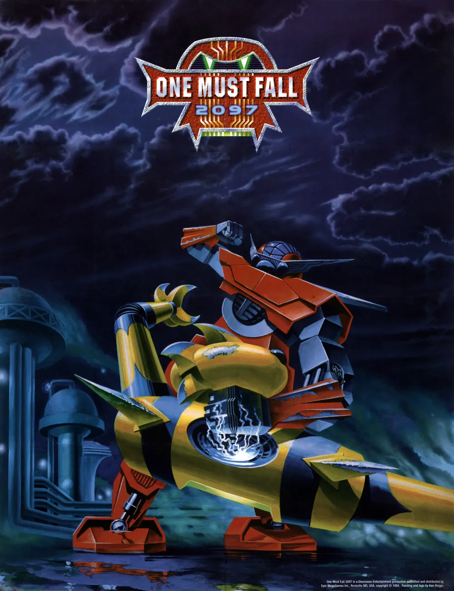

One Must Fall 2097 (1994)
One Must Fall 2097, dev robotları arenaya çıkaran yapısıyla klasik dövüş oyunlarını PC tarafında farklı bir noktaya taşıyan en özel retro yapımlardan biri. AltDünya Pack sürümüyle modern sistemlerde tek tıkla açılacak şekilde hazırlanmıştır.

Oyun Künyesi
AltDünya Yorumu
OMF 2097 bugün hâlâ güçlü duruyor çünkü sadece bir "PC’de Street Fighter alternatifi" değil. Robot tasarımları, ağır vuruş hissi, metalik sesler ve kariyer modundaki ilerleme duygusu sayesinde kendi kimliğini kurmuş bir oyun. Kurulum Rehberi için de çok iyi bir seçim; hem nostaljik değeri yüksek hem de videoda anlatacak malzemesi bol.
Kurulum Rehberi Videosu
Bu oyun için Kurulum Rehberi videosu yakında burada yer alacak.
Oynanış Özeti
Oyuncu bir pilot seçer, ardından seçtiği HAR yani dev robotla turnuvalara katılır. Maç kazandıkça para kazanılır; bu para robotun hız, güç, dayanıklılık ve özel sistemlerini geliştirmek için kullanılır. Bu yapı oyuna sadece dövüş değil, aynı zamanda küçük bir kariyer ve gelişim hissi de kazandırır. O dönem PC tarafında bu kadar belirgin yükseltme döngüsüne sahip dövüş oyunu görmek oldukça dikkat çekiciydi.
Oyunun Önemi
- PC oyuncuları için dönemin en akılda kalan dövüş oyunlarından biri oldu.
- Robot teması sayesinde klasik insan dövüşçülerden ayrışarak kendine has bir atmosfer kurdu.
- Turnuva modundaki para kazanma ve geliştirme sistemi oyuna tekrar oynanabilirlik kattı.
- Ses tasarımı, ağır yumruk hissi ve metalik efektleriyle bugün bile keyif veren bir arcade ruhu taşıyor.
Kısa Fact Köşesi
- Oyunun tam adı One Must Fall 2097 olsa da oyuncular arasında genelde kısaca OMF 2097 diye anılır.
- HAR sistemi, robotların sadece görsel değil oynanış açısından da belirgin şekilde farklı hissettirmesini sağlar.
- Turnuva modu, saf versus dövüş oyunlarına göre daha uzun soluklu bir deneyim sunar.
- Retro PC videolarında hem oynanış görüntüsü hem de nostalji değeri açısından çok güçlü bir materyaldir.